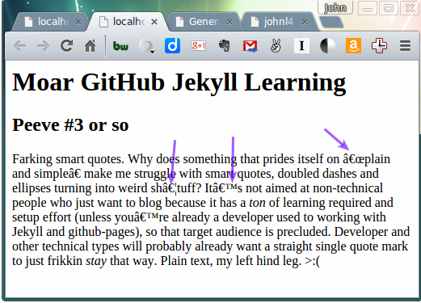
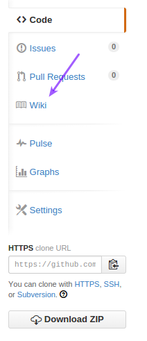

General Jekyll Notes, Journey of a Noob
Table of Contents
1 Setup on Windows, to add a new post
- Initial setup
- Install Ruby.
- Install the Ruby DevKit.
- Modify your path to include both Ruby's and the DevKit's
bindirectories:- PowerShell:
$env:PATH="$env:PATH;c:\Ruby22-x64\bin;c:\Ruby2-x64-DevKit\bin"
- PowerShell:
gem install jekyll
- Use
- Modify path to include both Ruby's and the DevKit's
bindirectories (as above). cdto your Jekyll web site (pulled down from Github, e.g., GitHub'sjohnl4.github.ioproject).jekyll buildto build your static content.jekyll serve --watchto serve your content.- Content is available at http://localhost:4000, by default (but the url is printed on stdout
by
jekyll serve)
- Content is available at http://localhost:4000, by default (but the url is printed on stdout
by
- Write a new post in the
_postsdirectory. Start with YYYY-MM-DD date and end with.markdownsuffix. Separate words with hyphens. - This particular file (
jekyll.org, at this moment) must be manually converted to html via org-mode's "export html" command. Jekyll doesn't do it. - Normal GitHub commit/push procedures to get this stuff shipped up to GitHub.
- Modify path to include both Ruby's and the DevKit's
2 Online class/API docs
- Jekyll: http://www.rubydoc.info/github/mojombo/jekyll/Jekyll/Post
- Ruby: http://ruby-doc.org/stdlib-2.2.0/libdoc/date/rdoc/Date.html#method-i-strftime
Maybe? Not sure how well these docs match the versions of whatever software you download.
3 Ruby gem install jekyll-docs failures
If you get this error: Could not find a valid gem 'jekyll-docs' (> 0) in any repository=, check
to make sure you can ping rubygems.org.
In the case of jekyll-docs specifically, you need to throw the --pre switch in (as of
2015-02-16):
sudo gem install jekyll-docs --pre
Of course, it still doesn't work. Oh, well.
4 DONE Turning off the "smart" punctuation
- CLOSING NOTE
Problem was entity output:as_char, not smart quotes. Github pages actually use smart quotes, if you look closely.
Look at this:

So, we need to find a way to turn off the "smart" punctuation. (You'll note that emacs org-mode doesn't have any trouble generating good html, out of the box. Of course, I'd probably have to struggle to make it generate "smart" punctuation, but, hey, if I wanted that, I'd probably not be using org-mode. So there.)
Well… looks like the Jekyll processor on github does actually not make the smart quotes, so I just to find out how to do that on my local Jekyll server. smart – dash? (Neet! org-mode turns both the ellipsis and the doubled dash into (the right) html entities!)
Here's a link: http://stackoverflow.com/questions/25596792/how-do-i-turn-off-smart-quotes-in-jekyll
4.1 DONE Default markdown processor is…
- CLOSING NOTE
…apparently, kramdown. See http://jekyllrb.com/docs/configuration/#default-configuration.
4.2 Problem was entity output, not smart quoting
Looks like the fix is as follows (in your _config.yml):
kramdown: entity_output: :symbolic # smart_quotes: ["apos", "apos", "quot", "quot"]
The problem isn't the smart quotes, it's the fact that entity output defaults to :as_char,
(http://kramdown.gettalong.org/rdoc/Kramdown/Options.html) which generates some very odd stuff if
your file is just plain text (ASCII)?
Looks like the characters served up by the github servers are interpreted correctly while the same characters off the local jekyll server get interpreted differently. Different page languages/encodings? UTF-8 vs ASCII?
5 DONE Need to find a way to style for small (mobile) screens
- CLOSING NOTE
Gave up. Works fine on Android, not on iPhone.
If you go through the github auto page generation drill, you can choose a style, which will result in a stylesheet being stuffed into your repository. Said stylesheet has small-screen settings, so figuring out how to style posts should help solve this problem.
5.1 DONE Styling org-mode output
- CLOSING NOTE
Use something like the following at the top of your org-mode file:#+HTML_HEAD: <link rel="stylesheet" type="text/css" href="style1.css" />
Or you could just not bother.
If we can figure this out, then maybe we can style org-mode output.
6 TODO Styling posts in Jekyll
Don't know how yet. Need layouts and stylesheets.
Not so hard, in theory. In _layouts, build an html page, reference whatever styles you need
(declaring them in stylesheets if you need to).
6.1 Layouts
In directory _layouts. Use Liquid tag {{ content }} to put post content into your template.
6.2 Stylesheets
In directory stylesheets.
6.3 TODO How to get CSS class names into the output of the markdown compiler
Pre-defined github styles have specific CSS classes that are where the good stuff really happens. If you just invoke the style in the output of a markdown processor (e.g., for posts), you'll get bad results, unless you can find a way to tie in to the CSS classes.
6.4 TODO Look at some sample code
7 DONE Github Wiki pages
- CLOSING NOTE
Not technically part of the Jekyll journey, but definitely part of the info-sharing-with-the-world journey.
Well, uh… embarassingly easy. For your project, there's a link on the right-side toolbar:

Here. https://github.com/JohnL4/johnl4.github.io/wiki. Knock yourself out.